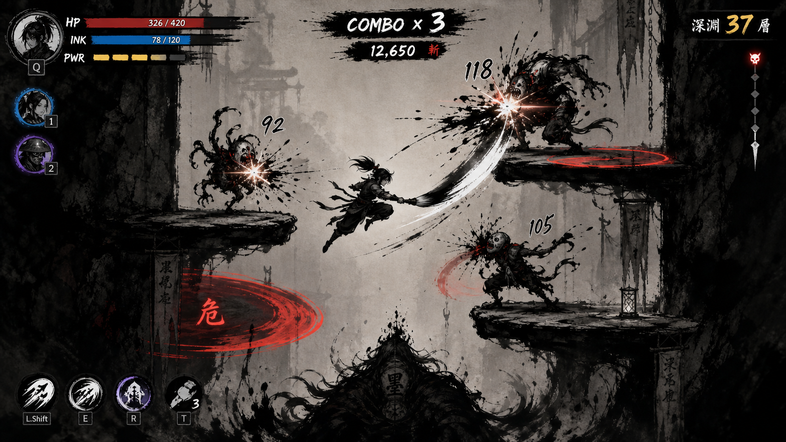
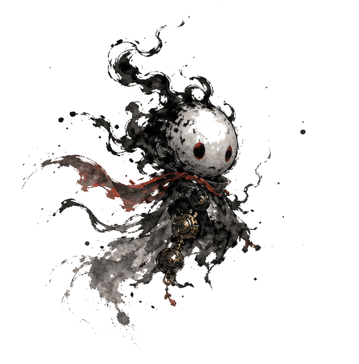
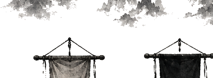
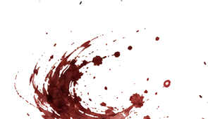
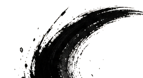
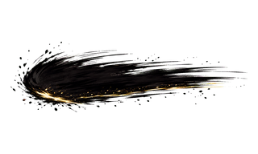
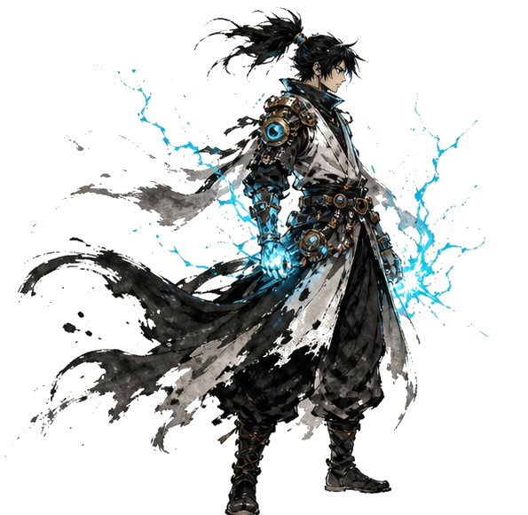

수묵화 스타일 2D 액션 플랫포머
동양 수묵화 배경에 메카닉 요소가 혼합된 캐릭터가 등장하는 2D 액션 플랫포머.
플레이어는 2명의 캐릭터를 실시간으로 교체하며 전투하고, 강력한 추격자를 피해 무한 생성 맵을 이동한다.
명확한 엔딩 없이 최대한 오래 생존하며 점수를 쌓는 서바이벌 방식이다.
점수 = 생존 시간(초) x 10 + 처치 수 x 50
| 키 | 동작 |
|---|---|
| 방향키 좌/우 | 이동 (속도 220) |
| 방향키 위 | 점프 (지면 접촉 시만, 속도 -550) |
| Z | 기본 공격 |
| X | 스킬 (스태미나 30 소모) |
| C (홀드) | 가드 (스태미나 초당 15 소모) |
| Tab | 캐릭터 교체 |
| Space | 게임 시작 / 재시작 |
| ESC | 메인 메뉴 복귀 (게임오버 시) |
적을 처치하지 않으면 HP가 지속 감소. HP가 낮을수록 강해진다.
| 조건 | 효과 |
|---|---|
| HP 30 이하 (저체력) | 공격력 1.5배 |
| HP 30 이하 (저체력) | 스태미나 자동 충전 2배 (초당 10 -> 20) |
| 적 미처치 3초 이상 경과 | HP 초당 2씩 감소 |
| 적 처치 시 | HP 감소 3초간 유예 |
onSwapIn() 특수 효과 발동| 상황 | 수치 |
|---|---|
| 최대치 | 100 |
| 자동 충전 (일반) | 초당 10 |
| 자동 충전 (저체력) | 초당 20 |
| 가드 유지 중 소모 | 초당 15 |
| 스킬 발동 소모 | 30 |
| 메카 팔 가드 피격 시 획득 | 20 |
범위 공격과 역장으로 다수의 적을 제어
| 행동 | 설명 | 수치 |
|---|---|---|
| 공격 (Z) | 전방 전기 방출 + 스턴 | 20dmg, 200범위, 500ms스턴 |
| 스킬 (X) | 광역 전기 폭발 + 스턴 | 50dmg, 300범위, 1000ms스턴 |
| 가드 (C) | 역장: 투사체 30%로 감속 | 250범위, 대미지 50% 경감 |
| 교체 진입 | 주변 적 감전 스턴 | 200범위, 800ms스턴 |
빠른 콤보와 대시로 근접전 특화
| 행동 | 설명 | 수치 |
|---|---|---|
| 공격 (Z) | 3단 콤보 (600ms내) | 15dmg, x1.0/1.2/1.5, 80~120범위 |
| 스킬 (X) | 대시 돌진 + 무적 | 속도800, 200ms무적 |
| 가드 (C) | 풀 대미지 + 스태미나 충전 | 100% 대미지, +20 스태미나 |
| 교체 진입 | 무적 + 속도 부스트 | 800ms무적, 1.5배속(1초) |
| 항목 | 수치 |
|---|---|
| HP | 50 |
| 이동 속도 | 80 |
| 공격 대미지 | 10 |
| 공격 사거리 | 60 |
| 공격 쿨다운 | 1500ms |
| 청크당 스폰 수 | 1~3마리 |
게임 내내 플레이어를 추적하는 파괴 불가 보스급 존재.
| 항목 | 수치 |
|---|---|
| 기본 이동 속도 | 120 |
| 접촉 대미지 | 5 (0.5초마다) |
| 접촉 판정 거리 | 60 |
| 중력 | 없음 (공중 이동) |
| 순서 | 패턴 | 간격 | 대미지 |
|---|---|---|---|
| 1 | 투사체 발사 (플레이어 조준) | 3초 | 15 (속도 300) |
| 2 | 범위 충격파 (예고 0.8초 후) | 6초 | 20 (반경 200) |
| 3 | 돌진 (플레이어 방향) | 8초 | 접촉 대미지 (속도 500, 0.4초) |
| 항목 | 수치 |
|---|---|
| 보장 발판 | 좌(x:200) / 중(x:640) / 우(x:1080) 각 1개, 너비 120 |
| 추가 발판 | 2~4개 (랜덤 위치, 너비 60~150) |
| 발판 높이 | 20px |
| 요소 | 위치 | 설명 |
|---|---|---|
| HP 바 | 좌측 상단 | 빨간색, HP 30% 이하 시 주황색 |
| 스태미나 바 | HP 바 하단 | 파란색 |
| 생존 시간 + 점수 | 상단 중앙 | "MM:SS N점" 형식 |
| 캐릭터 아이콘 | 우측 하단 | 활성 흰색, 비활성 회색 |
GameOver에서 SPACE로 재시작, ESC로 메인 메뉴 복귀
| 구분 | 기술 | 버전 |
|---|---|---|
| 런타임 | Electron | 28.x |
| 게임 엔진 | Phaser.js | 3.60 |
| 언어 | JavaScript | ES6+ |
| 테스트 | Jest | 29.x |
| 빌드 | electron-builder | 24.x |
| 배포 | Windows Portable EXE | - |
Electron
+-- BrowserWindow
+-- Phaser.js Game
+-- Scenes
| +-- BootScene (플레이스홀더 에셋 생성)
| +-- MainMenuScene (타이틀 화면)
| +-- GameScene (메인 게임플레이)
| +-- GameOverScene (점수 표시)
+-- Systems
| +-- StatSystem (HP/스태미나/점수)
| +-- CharacterManager (캐릭터 교체)
| +-- MapGenerator (무한 청크 생성/제거)
| +-- PursuerAI (추격자 상태머신)
+-- Entities
| +-- BaseCharacter (캐릭터 공통 베이스)
| +-- ElectricCharacter (전기 범위형)
| +-- MechaArmCharacter (메카 팔 근접형)
| +-- Enemy (일반 적)
| +-- Pursuer (추격자)
+-- UI
+-- HUD (게임 내 정보 표시)
| 항목 | 수치 |
|---|---|
| 최대 HP | 100 |
| 최대 스태미나 | 100 |
| 이동 속도 | 220 |
| 점프 속도 | -550 |
| 중력 | 600 |
| 저체력 기준 | HP 30 이하 |
| 저체력 공격 배율 | 1.5x |
| HP 자연 감소 | 초당 2 |
| 킬 후 HP 감소 유예 | 3초 |
| 피격 무적 | 500ms |
| 패링 윈도우 | 100ms |
| 항목 | 수치 |
|---|---|
| 생존 시간 보너스 | 초당 10점 |
| 적 처치 보너스 | 1마리당 50점 |
게임 시작 직후 자동으로 표시되는 3단계 조작법 안내 오버레이. 최초 1회만 노출 (onboardingSeen = true 저장 후 재노출 없음).
| 스텝 | 안내 내용 |
|---|---|
| 1 | 이동 (방향키 좌/우), 점프 (위 방향키) |
| 2 | 공격 Z / 스킬 X / 가드 C(홀드) |
| 3 | Tab — 캐릭터 교체 (즉시 효과 발동) |
첫 번째 캐릭터 교체(Tab) 전까지 HUD 우측 하단 캐릭터 아이콘 위에 깜빡이는 힌트 라벨 "Tab으로 교체" 표시. 교체 1회 성공 시 사라짐.
구간 0 (첫 청크)에서 적이 스폰되지 않는 동안 화면 중앙 상단에 단계별 행동 유도 텍스트를 순서대로 노출:
| 버전 | 날짜 | 내용 |
|---|---|---|
| v0.1.3 | 2026-06-22 | 기획서-구현 괴리 정리 - 현재 구현 상태를 최신 버전으로 갱신하고 이미 구현된 생성 아트/수묵 피드백을 완료 항목으로 이동 |
| v0.1.2 | 2026-06-22 | P0/P1 출시 준비 - docs 플레이 미리보기 링크 복구, HUD 우측 교체 슬롯 TAB 표기, v0.1.1 액션 피드백 문서화 |
| v0.1.0 | 2026-05-29 | UX 온보딩 추가 — 3스텝 조작법 오버레이 강화, 캐릭터 스왑 첫 노출 힌트, 연습 스테이지 가이드 |
자동 갱신: 2026-06-04. 코드, 씬, 프리팹, 설정 파일에서 참조가 확인된 리소스 기준입니다.
assets/generated/bg-mountain.png, assets/generated/blood-ink.png, assets/generated/brush-slash.png, assets/generated/combo-brush-smear.png, assets/generated/electric-char.png, assets/generated/enemy.png, assets/generated/heavy-hit-flash.png, assets/generated/impact-brush-ring.png, assets/generated/impact-ink-burst.png, assets/generated/ink-splatter.png, assets/generated/ink-wall.png, assets/generated/life-orb.png 외 12개메모:
자동 갱신: 2026-06-04. 공유 시 문서와 함께 아래 이미지 경로가 포함되어야 합니다.

assets/generated/enemy.png
assets/generated/bg-mountain.png
assets/generated/blood-ink.png
assets/generated/brush-slash.png
assets/generated/combo-brush-smear.png
assets/generated/electric-char.pngdocs/21NL_gameplay_preview.png를 실제 플레이 예시 이미지로 복구해 MD/HTML 기획서의 미리보기 링크가 깨지지 않도록 했다.교를 TAB으로 바꿔 조작 힌트를 즉시 읽을 수 있게 했다.